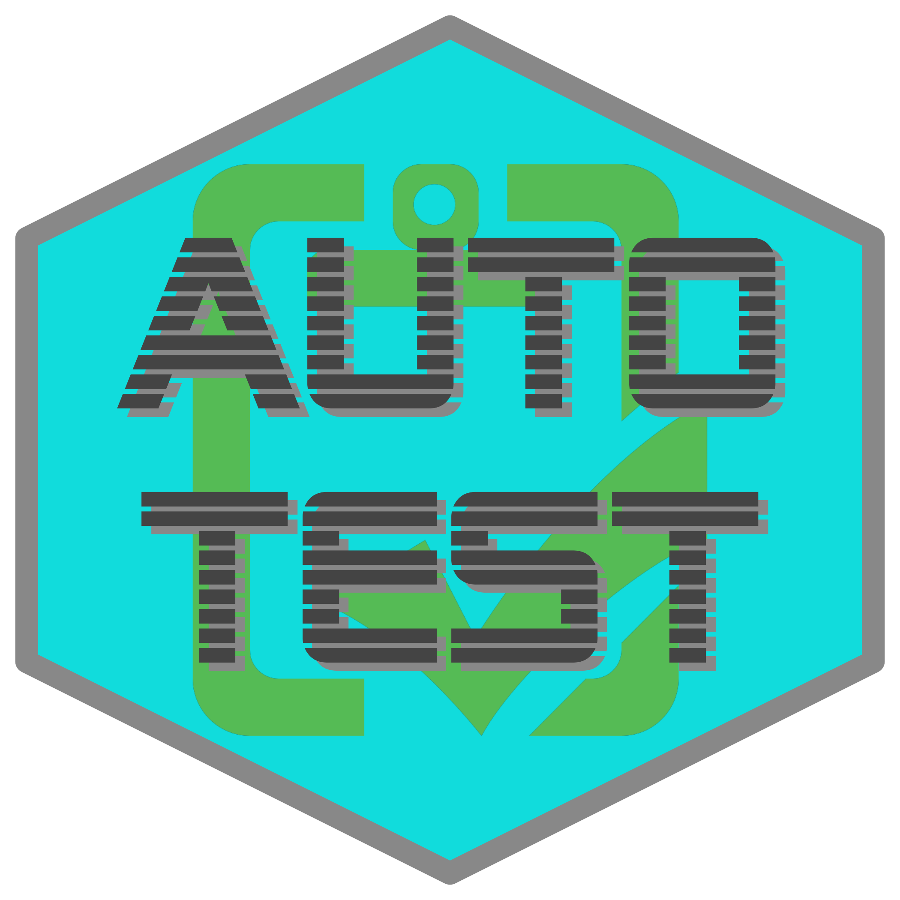

autotest 
Automatic mutation testing of R packages. Mutation in the sense of mutating inputs (parameters) to function calls. autotest primarily works by scraping documented examples for all functions, and mutating the parameters input to those functions.
Installation
autotest is on CRAN, so can be installed with
install.packages ("autotest")The current development version can be installed from r-universe with:
install.packages (
"autotest",
repos = c ("https://mpadge.r-universe.dev", "https://cloud.r-project.org")
)The package can also be installed from many other remote locations using any one of the following lines:
# install.packages("remotes")
remotes::install_git ("https://codeberg.org/mpadge/autotest")
remotes::install_git ("https://codefloe.com/mpadge/autotest")
remotes::install_github ("mpadge/autotest")
remotes::install_git ("https://git.sr.ht/~mpadge/autotest")
remotes::install_bitbucket ("mpadge/autotest")To start using, load the package with:
Usage
The simply way to use the package is
x <- autotest_package ("<package>")The main argument to the autotest_package() function can either be the name of an installed package, or a path to a local directory containing the source for a package. The result is a data.frame of errors, warnings, and other diagnostic messages issued during package autotest-ing. The function has an additional parameter, functions, to restrict tests to specified functions only.
By default, autotest_package() returns a list of all tests applied to a package without actually running them. To implement those tests, set the parameter test to TRUE. Results are only returned for tests in which functions do not behave as expected, whether through triggering errors, warnings, or other behaviour as described below. The ideal behaviour of autotest_package() is to return nothing (or strictly, NULL), indicating that all tests passed successfully. See the main package vignette for an introductory tour of the package.
What is tested?
The package includes a function which lists all tests currently implemented.
autotest_types ()
#> # A tibble: 27 × 8
#> type test_name fn_name parameter parameter_type operation content test
#> <chr> <chr> <chr> <chr> <chr> <chr> <chr> <lgl>
#> 1 dummy rect_as_other <NA> <NA> rectangular Convert … "check… TRUE
#> 2 dummy rect_compare_… <NA> <NA> rectangular Convert … "expec… TRUE
#> 3 dummy rect_compare_… <NA> <NA> rectangular Convert … "expec… TRUE
#> 4 dummy rect_compare_… <NA> <NA> rectangular Convert … "expec… TRUE
#> 5 dummy extend_rect_c… <NA> <NA> rectangular Extend e… "(Shou… TRUE
#> 6 dummy replace_rect_… <NA> <NA> rectangular Replace … "(Shou… TRUE
#> 7 dummy vector_to_lis… <NA> <NA> vector Convert … "(Shou… TRUE
#> 8 dummy vector_custom… <NA> <NA> vector Custom c… "(Shou… TRUE
#> 9 dummy double_is_int <NA> <NA> numeric Check wh… "int p… TRUE
#> 10 dummy trivial_noise <NA> <NA> numeric Add triv… "(Shou… TRUE
#> # ℹ 17 more rowsThat functions returns a tibble describing r nrow(autotest_types()) unique tests. The default behaviour of autotest_package() with test = FALSE uses these test types to identify which tests will be applied to each parameter and function. The table returned from autotest_types() can be used to selectively switch tests off by setting values in the test column to FALSE, as demonstrated below.
How Does It Work?
The package works by scraping documented examples from all .Rd help files, and using those to identify the types of all parameters to all functions. Usage therefore first requires that the usage of all parameters be demonstrated in example code.
As described above, tests can also be selectively applied to particular functions through the parameters functions, used to nominate functions to include in tests, or exclude, used to nominate functions to exclude from tests. The following code illustrates.
x <- autotest_package (package = "stats", functions = "var", test = FALSE)
#> namespace 'stats' is already loaded so argument 'keep.source' will be ignored.
#> Error in cov(swM, use = "all") : missing observations in cov/cor
#> R^2 = 0.21
#> Loading required namespace: testthat
print (x)
#> # A tibble: 21 × 8
#> type test_name fn_name parameter parameter_type operation content test
#> <chr> <chr> <chr> <chr> <chr> <chr> <chr> <lgl>
#> 1 warning par_is_demo… var na.rm <NA> Check th… Exampl… TRUE
#> 2 warning par_is_demo… var use <NA> Check th… Exampl… TRUE
#> 3 dummy trivial_noi… var x numeric Add triv… (Shoul… TRUE
#> 4 dummy vector_to_l… var x vector Convert … (Shoul… TRUE
#> 5 dummy negate_logi… var na.rm single logical Negate d… (Funct… TRUE
#> 6 dummy subst_int_f… var na.rm single logical Substitu… (Funct… TRUE
#> 7 dummy subst_char_… var na.rm single logical Substitu… should… TRUE
#> 8 dummy single_par_… var na.rm single logical Length 2… Should… TRUE
#> 9 dummy return_succ… var (return … (return objec… Check th… <NA> TRUE
#> 10 dummy return_val_… var (return … (return objec… Check th… <NA> TRUE
#> # ℹ 11 more rowsTesting the var function also tests cor and cov, because these are all documented within a single .Rd help file. Typing ?var shows that the help topic is cor, and that the examples include the three functions, var, cor, and cov. That result details the 21 tests which would be applied to the var function from the stats package. These 21 tests yield the following results when actually applied:
y <- autotest_package (package = "stats", functions = "var", test = TRUE)
#> Error in cov(swM, use = "all") : missing observations in cov/cor
#> R^2 = 0.21
print (y)
#> # A tibble: 11 × 8
#> type test_name fn_name parameter parameter_type operation content test
#> <chr> <chr> <chr> <chr> <chr> <chr> <chr> <lgl>
#> 1 warning par_is_d… var na.rm <NA> Check th… "Examp… TRUE
#> 2 warning par_is_d… var use <NA> Check th… "Examp… TRUE
#> 3 diagnostic vector_t… var x vector Convert … "Funct… TRUE
#> 4 diagnostic subst_in… var na.rm single logical Substitu… "(Func… TRUE
#> 5 diagnostic vector_t… var x vector Convert … "Funct… TRUE
#> 6 diagnostic vector_t… var x vector Convert … "Funct… TRUE
#> 7 diagnostic vector_t… var x vector Convert … "Funct… TRUE
#> 8 diagnostic vector_t… var x vector Convert … "Funct… TRUE
#> 9 diagnostic vector_t… var y vector Convert … "Funct… TRUE
#> 10 diagnostic vector_t… var x vector Convert … "Funct… TRUE
#> 11 diagnostic vector_t… var x vector Convert … "Funct… TRUEAnd only 11 of the original 21 tests produced unexpected behaviour. There were in fact only 3 kinds of tests which produced these 11 results:
unique (y$operation)
#> [1] "Check that parameter usage is demonstrated"
#> [2] "Convert vector input to list-columns"
#> [3] "Substitute integer values for logical parameter"One of these involves conversion of a vector to a list-column representation (via I(as.list(<vec>))). Relatively few packages accept this kind of input, even though doing so is relatively straightforward. The following lines demonstrate how these tests can be switched off when autotest-ing a package. The autotest_types() function, used above to extract information on all types of tests, also accepts a single argument listing the test_name entries of any tests which are to be switched off.
types <- autotest_types (notest = "vector_to_list_col")
y <- autotest_package (
package = "stats", functions = "var",
test = TRUE, test_data = types
)
#> Error in cov(swM, use = "all") : missing observations in cov/cor
#> R^2 = 0.21
print (y)
#> # A tibble: 3 × 8
#> type test_name fn_name parameter parameter_type operation content test
#> <chr> <chr> <chr> <chr> <chr> <chr> <chr> <lgl>
#> 1 warning par_is_de… var na.rm <NA> Check th… Exampl… TRUE
#> 2 warning par_is_de… var use <NA> Check th… Exampl… TRUE
#> 3 diagnostic subst_int… var na.rm single logical Substitu… (Funct… TRUEThose tests are still returned from autotest_package(), but with test = FALSE to indicate they were not run, and a type of “no_test” rather than the previous “diagnostic”.
Prior work
- The
great-expectationsframework for python, described in this medium article. -
QuickCheckfor Haskell -
mutatefor ruby -
mutantfor mutation of R code itself
Contributors
All contributions to this project are gratefully acknowledged using the allcontributors package following the allcontributors specification. Contributions of any kind are welcome!


Issue Authors
 noamross |
 njtierney |
 JeffreyRStevens |
 bbolker |
 mattfidler |
 kieranjmartin |
 statnmap |
 vgherard |
 christophsax |
 joelnitta |
 santikka |
 abigailkeller |
 schneiderpy |
 TanguyBarthelemy |
Issue Contributors
 gilbertocamara |